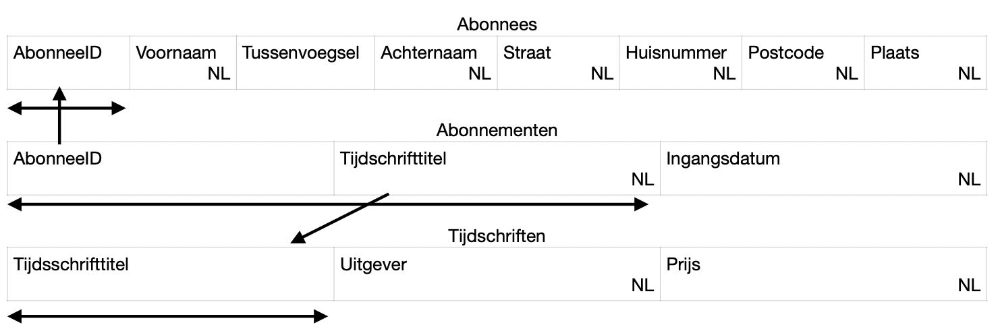

De laatste stap voor het maken van de database is het kijken of je de tabellen kleiner kunnen. Om ervoor te zorgen dat je nooit te veel informatie tegelijk hebt, kun je de gegevens normaliseren. We leren nu de vier vormen van normaliseren, beginnen bij 0NV. Dit staat voor de nulde normaalvorm.
Deze vorm kom je hopelijk niet zo snel tegen, dit betekent namelijk dat alle gegevens die je hebt gewoon in een tabel zijn gegooid zonder verdere bedenking van hoe dit het beste weergegeven kan worden zie bijvoorbeeld het volgende strokendiagram:
De eerste normaalvorm ziet er dan ook al weer een stukje beter uit. In deze vorm haal je alle gegevens die herhaalt worden weg en zet je in een nieuwe tabel waarmee je verwijst met een referentiesleutel. In het voorbeeld van 0NV wordt alle Tijdschrift informatie en alle gegevens informatie herhaalt. Stel je bijvoorbeeld voor dat je twee verschillende tijdschriften bestelt, dan staan jouw gegevens twee keer in de tabel. In de eerste normaal vorm haal je daarom al jouw persoonsgegevens uit de abonnementen tabel, en zet je in een eigen abonnees tabel.
De tweede normaalvorm gaat over het afsplitsen van labeltypes in de sleutels. Dit zijn stukken informatie die afhankelijk zijn van een deel van een gedeelde sleutel. In 1NV zag je dat het tijdschrift een uitgever en een prijs heeft. Deze informatie verandert niet, maar is wel deel van het tijdschrift. Je kunt dus een aparte tabel maken met daarin de titel, uitgever en prijs zodat je deze kan opzoeken wanneer het nodig is.
In de derde normaalvorm splits je ook labeltypes af die geen onderdeel zijn van een sleutel. Dit is bijvoorbeeld de postcode. De postcode is altijd het zelfde voor een straat en plaats, het enige wat je dan nog nodig hebt is het huisnummer. Hiermee elimineer je weer een stukje gegevens die herhaalt worden in een tabel. Je kijkt naar gegevens die afhankelijk zijn van elkaar.